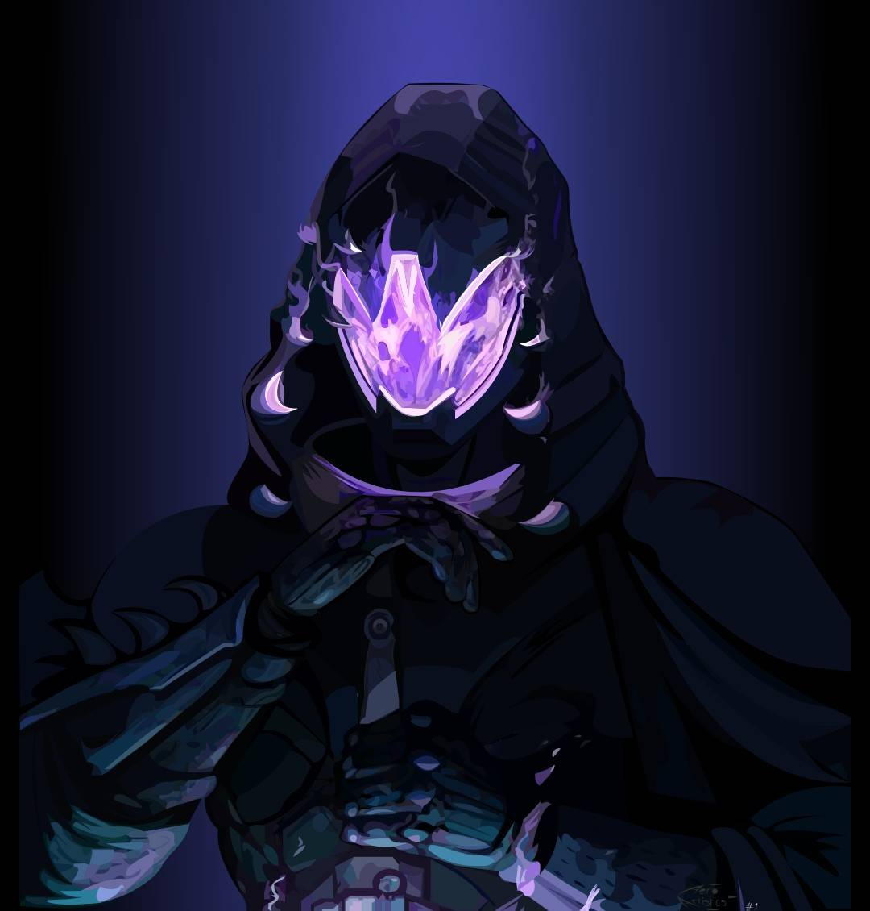

For today's software engineering content, we are going to dive into how to write out form requests to implement various HTTP methods from scratch, as well as how to setups basic HTML file from scratch.
I will be showing you how to setup form requests, as well as: text inputs, password inputs, submit modules, and lastly, file uploads for an html page.
The goal of this, is to get you into the habit of knowing how HTML code works and how to tamper with it.
Pay close attention to how I'm writing the code, as you'll need to know this for the upcoming lab that is set to launch soon.
Source code, like always, will be in the attachments section bellow.
Disclaimer
As always, personal disclaimer, any and all information for this is strictly for educational purposes and I do not condone any form of illegal activity, nor am I responsible for anything you should use this information for. DO NOT pen-test on anyone's network unless it is your own, or you have permission to do so. Now, let’s begin!
- The Hacker Who Laughs 🕸🕸🎃🕸🕸
Radio Module
Today, I’m going to cover how to program an RF module with arduino in order to send radio waves from one radio module to another.
This is going to come majorly into play for the next lab that I have set, as well as one of the biggest projects in the long run, so do pay close attention to how I am writing the code for it.
Don’t forget that how to set up any and all modules takes place during the major lab that will be combining all the parts together.
The goal for all of this is to get you used to how to write the code, and then we dive into how to physically set all of it up which is the fun hands on part that you all know and love.
Disclaimer
As always, personal disclaimer, any and all information for this is strictly for educational purposes and I do not condone any form of illegal activity, nor am I responsible for anything you should use this information for. DO NOT pen-test on anyone's network unless it is your own, or you have permission to do so. Now, let’s begin!
- The Hacker Who Laughs 🕸🕸🎃🕸🕸
DANGER! WAP
Today, I’m going to talk about why WAP security and why it’s important for you to implement it for both home networks, ESPECIALLY HOME NETWORKS, as well as corporate infrastructures. We often overlook this, which can lead to a MASSIVE SPOF that can lead to a massive scaled botnet if we’re not careful with implementing proper WAP endpoint security measures. I specialize in networking overall so I have a lot of fun messing around with penetration testing regarding them.
I’m also going to talk a bit about the various creative ways threat actors can exploit an access point to do some serious damage and a lot more. Of course *whistles* I’m just theorizing. It’s not like I’ve been paid to do this stuff before right haha…. *cricket noises*.. AHEM… back to the point of the matter!
I’m also going to talk about what SPOF is since it’s a CRITICAL topic that you’ll often come across in Cyber and Information security, WHICH YOU NEED TO KNOW. It’s so important that simply not knowing it is one of the MAIN reasons why we have so many security breaches and bad Cyber Security practices.
Lastly, since this is of course the danger series, I am going to address MANY remedies that can be done in order to enhance your overall network security, most of which you probably have never thought of in the first place. I’ve played around with a lot of this stuff, so do take my word for it.
This article is a part of the Danger! Series, which is where I raise more Cyber Security awareness about critical flaws and vulnerabilities that exist within various system infrastructures, including any protocols and data communication methods, and the Dangers of what could happen should they be exploited to the fullest extent. I also go over various mitigation strategies that can be used to prevent them as well. If by chance there is an exploit video for me showing the full potential risk, it will be included in the advance version of this article for PAID patreon members only!
Disclaimer
As always, personal disclaimer, any and all information for this is strictly for educational purposes and I do not condone any form of illegal activity, nor am I responsible for anything you should use this information for. DO NOT pen-test on anyone's network unless it is your own, or you have permission to do so. Now, let's begin!
- The Hacker Who Laughs 🕸🕸🎃🕸🕸
DANGER! A.I.
Today I’m going to address a hot topic, one that has been going around lately since it’s innate birth… WILL A.I. REPLACE US? I’m going to basically debunk some of the most popular reasons why, and why it’s just another tool that will aid us in our daily lives. I’m also going to talk a bit about what A.I.is and how it compares to actual human intelligence since the overall goal of it is to replicate the human mind. I’m also, lastly, going to discuss the BIGGEST downfall that has been leading to a lot of FAILED expectations to be met from A.I, and how the overall introduction of it has affected the overall job market.
Recently with the development of OpenAI, which lead to stuff like ChatGPT, we’ve entered a more advanced era of A.I., where it can do a bit more than just “Hey Siri”, or “Hey Alexa”, and query and search stuff for us and return the results. “A.I”has progressed to the point where it’s able to do ACTUAL stuff like: generate images for us, write our resume and cover letters, generate basic code templates, generate animations, etc. I think you get the picture! BUT, don’t be misled by what you see on paper. Not everything translates well.
I’m also going to talk about why I don’t like A.I., which is mostly due to the FALSE image that it has implanted in our minds and WHY I’m enjoying it’s slow and inevitable downfall. I’m a HUGE tech enthusiast, and am VERY open minded to many implementations of it. Tech has advanced society to limits that I wouldn’t have imagine possible, which also lead to it HELPING a lot of people overall, as well as made things more accessible for the disabled: prosthetics, eye care, hearing impaired, etc, the list goes on. Typically technology BENEFITS EVERYONE and has a POSITIVE effect (ahem… I know what you’re thinking just go with it haha), but in the case of A.I, it has lead to the false impression of a utopia that simply WILL NEVER EXIST! One where the robots will do all the work for us so we can just sit back and relax and prosper from it. We looked only a the short term of A.I. and not the long term, and because of that, we are PAYING a hefty price for it. It’s being used to REPLACE us, NOT HELP US.
Lastly, I’ll also be covering a few HUGE security risks and COPY right laws that come into factor regarding it.
This article is a part of the Danger! Series, which is where I raise more Cyber Security awareness about critical flaws and vulnerabilities that exist within various system infrastructures, including any protocols and data communication methods, and the Dangers of what could happen should they be exploited to the fullest extent. I also go over various mitigation strategies that can be used to prevent them as well. If by chance there is an exploit video for me showing the full potential risk, it will be included in the advanced version of this article for PAID patreon members only!
Disclaimer
As always, personal disclaimer, any and all information for this is strictly for educational purposes and I do not condone any form of illegal activity, nor am I responsible for anything you should use this information for. DO NOT pen-test on anyone's network unless it is your own, or you have permission to do so. Now, let’s begin!
- The Hacker Who Laughs 🕸🕸🎃🕸🕸
Revshell PHP
Today I am going to show you how to write your own custom reveshell script that can perform RCE on any system. This is taking inspiration from revershells which have a series of RCE shells that you can download and interact with that will allow you to seamlessly achieve RCE for any remote file upload exploit.
Why am I covering this despite there being a site that allows you to do so? Well, much like all things involving hacking you’ll run into situations where you need to write more complex code, even code that is pre-made beforehand for an exploit which might go out of the scope of what you need said program to do. This is also due to the fact that various detection systems are able to identify signature patterns. If you know how to write your own code you can apply further obfuscation methods that will allow you to bypass security.
I am also going to show you how the code works under the hood so that you have a CLEAR understanding of how it works and how to write it yourself.
This WILL be in the lab upcoming, so I recommend you get good with this as the REAL exploit for the next lab is going to be a lot more complex.
Disclaimer
As always, personal disclaimer, any and all information for this is strictly for educational purposes and I do not condone any form of illegal activity, nor am I responsible for anything you should use this information for. DO NOT pen-test on anyone's network unless it is your own, or you have permission to do so. Now, let’s begin!
- The Hacker Who Laughs 🕸🕸🎃🕸🕸
SSHClient
Today I’m going to show you how to write your own SSH client via Python that you can use to connect to ANY SSH service and pipe in commands to the server.
The main little goal of this exercise is to teach you how the SSH protocol works under the hood. What you do with this information, which like all things, can also be used for hacking.
I will also eventually be covering how to write your one SSH server which can come in handy. The issue with this is there have been reports of people having issues with the module working.
The goal for all of this is to get you used to how to write the code, and then we dive into how to physically set all of it up which is the fun hands on part that you all know and love.
Disclaimer
As always, personal disclaimer, any and all information for this is strictly for educational purposes and I do not condone any form of illegal activity, nor am I responsible for anything you should use this information for. DO NOT pen-test on anyone's network unless it is your own, or you have permission to do so. Now, let’s begin!
- The Hacker Who Laughs 🕸🕸🎃🕸🕸
SmbClient
For today’s tool video, I’m going to show you how to use the smbclient tool in order to sniff out and exploit smb file shares on windows systems to retrieve a sensitive file that contains password end user credentials.
File shares are one of the most CRITICAL end points to protect on any system. There’s a reason why OS systems CLOSE their ports by default on most systems.
Should a threat actor be able to breach the service, they will have access to any and all file shares on the system, as well as being able to upload and replace and or tamper with files within the FTP service. This can lead to a lot more complex exploits like living off the land for example.
The goal for all of this is to get you used to how to write the code, and then we dive into how to physically set all of it up which is the fun hands on part that you all know and love.
Disclaimer
As always, personal disclaimer, any and all information for this is strictly for educational purposes and I do not condone any form of illegal activity, nor am I responsible for anything you should use this information for. DO NOT pen-test on anyone's network unless it is your own, or you have permission to do so. Now, let’s begin!
- The Hacker Who Laughs 🕸🕸🎃🕸🕸
Wireshark
For today’s tool video, I’m going to show you how to use wireshark to sniff out traffic on the network to spy on sensitive credentials that are sent, and WHY you should NEVER use a site unless it has HTTPS enabled on it. Be mindful, just because a site does have HTTPS enabled doesn’t mean it’s safe and secure. Threat actors tend to have phishing sites that enable the protocol to trick us into thinking it’s legit.
The wireshark tool, which is used for network traffic analysis, can also be used for a variety of protocol analysis, even for stuff like VOIP eavesdropping, which can allow you to spy on people’s phone call conversations over corporate networks. I’ll eventually cover stuff like that in future parts involving the tool later on.
Disclaimer
As always, personal disclaimer, any and all information for this is strictly for educational purposes and I do not condone any form of illegal activity, nor am I responsible for anything you should use this information for. DO NOT pen-test on anyone's network unless it is your own, or you have permission to do so. Now, let’s begin!
- The Hacker Who Laughs 🕸🕸🎃🕸🕸
Servo
Today I'm going to show you how to program servo motors in arduino.
The main goal is to “simulate” and show you how programming them for drones work under the hood. I’ll of course leave the working code attached. Just pay attention to how I write the code and go about the overall process and you’ll be fine.
For this demonstration I’ll be covering how to program them via the standard ones that come with the arduino kit. I’ll also show you how to program them via ESC motors for the drone.
Disclaimer
As always, personal disclaimer, any and all information for this is strictly for educational purposes and I do not condone any form of illegal activity, nor am I responsible for anything you should use this information for. DO NOT pen-test on anyone's network unless it is your own, or you have permission to do so. Now, let’s begin!
- The Hacker Who Laughs 🕸🕸🎃🕸🕸
LCD

Today I’m going to show you how to program LCD screens.
This is staple if you get crafty and want to program CUSTOM stuff like *cough* visualizers that print your emojis to the screen.
I’ll be showing you how to program TWO versions of LCD screens that you’ll commonly see in the arduino kit for beginners. 1 of them is the standard one with MANY pin connectors attached to them which can be the most complex to setup. The other is one that is commonly and easily interchangeable which includes a ISC adapter attached to them which is seamless to install and program. I recommend knowing how to program both of them so you can make either work in case you are running short on supplies, OR, in the event you ONLY have one or the other. None the less it’s still staple to know how to program BOTH of them.
Disclaimer
As always, personal disclaimer, any and all information for this is strictly for educational purposes and I do not condone any form of illegal activity, nor am I responsible for anything you should use this information for. DO NOT pen-test on anyone's network unless it is your own, or you have permission to do so. Now, let’s begin!
- The Hacker Who Laughs 🕸🕸🎃🕸🕸
BufferOverflow64
Today’s exploit video will feature something that has been HEAVILY requested by many of my followers… BINARY injection, also known commonly as a Buffer Overflow exploit
Much like how SQL injection is hard to learn without proper instruction, so is binary injection. What I’m going to show you today is the overall premise and concept behind the technique. This is the DEFINITIVE example and BEST way to EASILY explain how binary injection works to ANYONE that wants to learn more about it.
Binary is overall one of the HARDEST techniques to learn and master mostly due to there being FEW GOOD resources that can teach it to you.
I’m also going to write some sample code in C that will be vulnerable to buffer overflow attacks, so that you can play with it and get a feel for how it works on a technical level. This will also set us up for the next part, which will be me covering how to use a debugger to analyze the code flow, as well as perform the overall exploit the manual way. There are more special surprises for binary injection coming up so do stay tuned.
As always, any and all videos that are included with this article will be for PAID members only! You can check out my tiers and pricing down in my patreon link in the comment section below as well as on my website.
Disclaimer
As always, personal disclaimer, any and all information for this is strictly for educational purposes and I do not condone any form of illegal activity, nor am I responsible for anything you should use this information for. DO NOT pen-test on anyone's network unless it is your own, or you have permission to do so. Now, let’s begin!
- The Hacker Who Laughs 🕸🕸🎃🕸🕸
RCEBinary
Today, I’m going to dive further into binary injection exploits, and cover how to exploit them for RCE, remote code execution. I’m also going to show you how to use one of the most common tools that is used to analyze code flow as well as binary applications overall, GDB debugger. I’ll explain a bit about what that is as well.
Last time, I showed you how to exploit vulnerable functions inside of a program via end user input in order to call other functions within the program via memory EVEN if the function is NEVER explicitly called in the program itself. This was to highlight the dangers of leaving vulnerable code within an application and how it can be exploited by threat actors to execute it which can be problematic if you’ve left stuff like backdoors in the code that the threat actor can easily piggyback off of to compromise internal infrastructures.
This time around, we are going to take it a step further and exploit the overall application to have it perform ANY form of RCE that we want against a target application whether it be in plain text format or binary format.
This is a CRUCIAL skill to master, as you’ll often run into various CTF challenges that require you to know binary exploitation, as well as overall in general if you are running some security tests. It overall comes in handy if you’re just a hacker in general and is a STAPLE skill to master. You’ll go a long way, ESPECIALLY if you plan to do forensic with this skill set.
Disclaimer
As always, personal disclaimer, any and all information for this is strictly for educational purposes and I do not condone any form of illegal activity, nor am I responsible for anything you should use this information for. DO NOT pen-test on anyone's network unless it is your own, or you have permission to do so. Now, let’s begin!
- The Hacker Who Laughs 🕸🕸🎃🕸🕸
🕸🕸🕸🕸🕸🕸🕸🕸🕸🕸🕸🕸🕸🕸🕸🕸🕸🕸🕸🕸🕸🕸🕸🕸🕸🕸🕸🕸🕸🕸🕸🕸🕸🕸🕸
🕸🕸🎃🕸🕸 Articles 🕸🕸🎃🕸🕸
🕸🕸🕸🕸🕸🕸🕸🕸🕸🕸🕸🕸🕸🕸🕸🕸🕸🕸🕸🕸🕸🕸🕸🕸🕸🕸🕸🕸🕸🕸🕸🕸🕸🕸🕸
Form Requests
For today's software engineering content, I'm going to teach you how to program form pages.
Radio Module
This week, I'm going to show you how to program your very own RF module for arduino.
DANGER! WAP
Today, I’m going to talk about why WAP security and why it’s important for you to implement it.
DANGER! A.I.
Today I’m going to address a hot topic regarding A.I. which is long overdue.
Revshell PHP
Today I am going to show you how to write your own custom reveshell script in PHP.
SSHClient
Today I’m going to show you how to write your own SSH client in Python3.
Wireshark
For today’s tool video, I’m going to show you how to use wireshark to capture password data.
Servo
Today I'm going to show you how to program servo motors in arduino for drones.
LCD
Today I’m going to show you how to program LCD screens with Arduino.
BufferOverflow
Today’s exploit video will feature something HEAVILY requested… BINARY injection.
RCEBinary
Today, I’m going to dive further into binary injection exploits and cover RCE with it.
SMBClient
For today’s tool video, I’m going to show you how to use smbclient to exploit file shares.